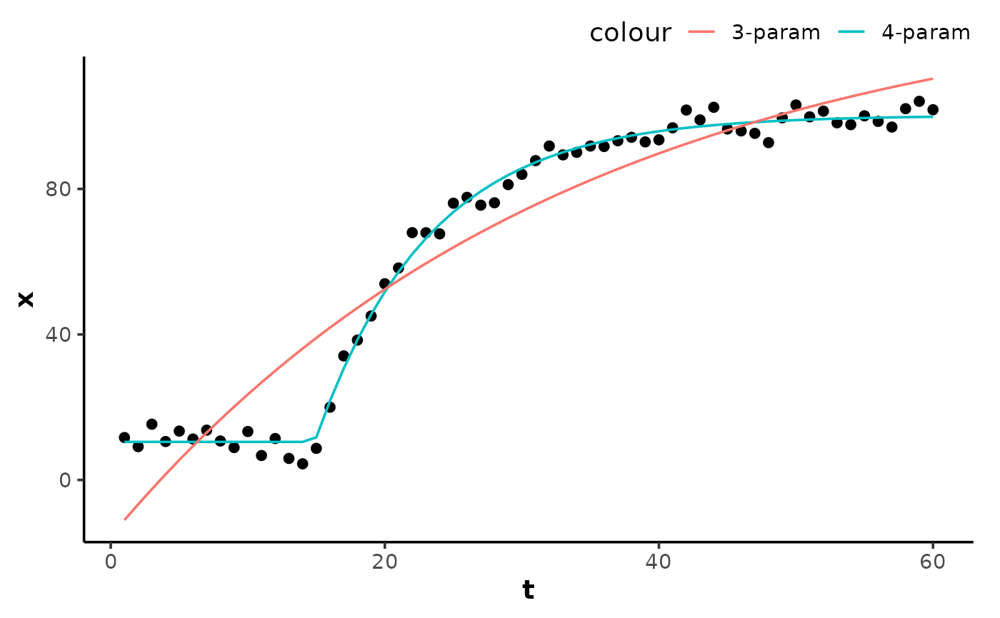

Creates initial coefficient estimates for a selfStart wrapper around
monoexponential(), for use with stats::nls(). Supports both the
3-parameter (A, B, tau) and 4-parameter (A, B, tau, TD) forms; arity is
inferred from the formula passed to stats::nls().
Arguments
- t
A numeric vector of the predictor variable (time).
- A
A numeric parameter for the starting baseline of the response variable.
- B
A numeric parameter for the ending asymptote of the response variable.
- tau
A numeric parameter for the time constant (\(\tau\)) of the exponential response, in units of the predictor variable
t.- TD
A numeric parameter for the time delay before the onset of the exponential response, in units of the predictor variable
t. IfNULL(default), a 3-parameter model without time delay is used.
Details
Model formulas
3-parameter:
x ~ SSmonoexponential(t, A, B, tau)4-parameter:
x ~ SSmonoexponential(t, A, B, tau, TD)
The 3-parameter form is recommended for small samples or when no obvious
time delay is expected, as it converges more reliably. stats::nls()
reads the free parameters from the formula right-hand side, so omitting
TD incurs no degrees-of-freedom penalty.
Starting estimates are profiled on a coarse grid of tau (and TD) with
the asymptotes solved by least squares at each grid point, keeping the
residual-minimising start.
The model function returns the analytic gradient for the free parameters
as a "gradient" attribute, so stats::nls() does not resort to
stats::numericDeriv(). stats::predict() on a fitted model carries the
attribute; drop it with as.vector().
Fixing parameters
Any parameter may be held constant by writing a value in place of its name
in the formula, e.g. x ~ SSmonoexponential(t, A = 0, B, tau) fixes the
baseline at A = 0. Fixed parameters are excluded from estimation and are
not returned by stats::coef().
Examples
## create an exponential curve with random noise
set.seed(13)
t <- 1:60
x <- monoexponential(t, A = 10, B = 100, tau = 8, TD = 15) +
rnorm(length(t), 0, 3)
data <- data.frame(t, x)
## 4-parameter fit
model4 <- nls(x ~ SSmonoexponential(t, A, B, tau, TD), data = data)
summary(model4)
#>
#> Formula: x ~ SSmonoexponential(t, A, B, tau, TD)
#>
#> Parameters:
#> Estimate Std. Error t value Pr(>|t|)
#> A 10.4611 0.7622 13.72 <2e-16 ***
#> B 100.2334 0.7527 133.17 <2e-16 ***
#> tau 8.3128 0.3562 23.34 <2e-16 ***
#> TD 14.8835 0.1898 78.43 <2e-16 ***
#> ---
#> Signif. codes: 0 ‘***’ 0.001 ‘**’ 0.01 ‘*’ 0.05 ‘.’ 0.1 ‘ ’ 1
#>
#> Residual standard error: 2.852 on 56 degrees of freedom
#>
#> Number of iterations to convergence: 4
#> Achieved convergence tolerance: 1.182e-06
#>
## 3-parameter fit on the same data
model3 <- nls(x ~ SSmonoexponential(t, A, B, tau), data = data)
summary(model3)
#>
#> Formula: x ~ SSmonoexponential(t, A, B, tau)
#>
#> Parameters:
#> Estimate Std. Error t value Pr(>|t|)
#> A -15.465 5.842 -2.647 0.0105 *
#> B 135.461 13.840 9.788 8.20e-14 ***
#> tau 33.478 6.829 4.902 8.24e-06 ***
#> ---
#> Signif. codes: 0 ‘***’ 0.001 ‘**’ 0.01 ‘*’ 0.05 ‘.’ 0.1 ‘ ’ 1
#>
#> Residual standard error: 11.84 on 57 degrees of freedom
#>
#> Number of iterations to convergence: 10
#> Achieved convergence tolerance: 6.284e-06
#>
## fix the baseline `A` at a known value
model_fixed <- nls(x ~ SSmonoexponential(t, A = 10, B, tau, TD), data = data)
summary(model_fixed)
#>
#> Formula: x ~ SSmonoexponential(t, A = 10, B, tau, TD)
#>
#> Parameters:
#> Estimate Std. Error t value Pr(>|t|)
#> B 100.2335 0.7485 133.92 <2e-16 ***
#> tau 8.3128 0.3542 23.47 <2e-16 ***
#> TD 14.8409 0.1763 84.19 <2e-16 ***
#> ---
#> Signif. codes: 0 ‘***’ 0.001 ‘**’ 0.01 ‘*’ 0.05 ‘.’ 0.1 ‘ ’ 1
#>
#> Residual standard error: 2.836 on 57 degrees of freedom
#>
#> Number of iterations to convergence: 4
#> Achieved convergence tolerance: 1.335e-06
#>
y4 <- predict(model4, data)
y3 <- predict(model3, data)
# \donttest{
if (requireNamespace("ggplot2", quietly = TRUE)) {
ggplot2::ggplot(data, ggplot2::aes(t, x)) +
theme_mnirs() +
ggplot2::geom_point() +
ggplot2::geom_line(ggplot2::aes(y = y4, colour = "4-param")) +
ggplot2::geom_line(ggplot2::aes(y = y3, colour = "3-param"))
}

# }